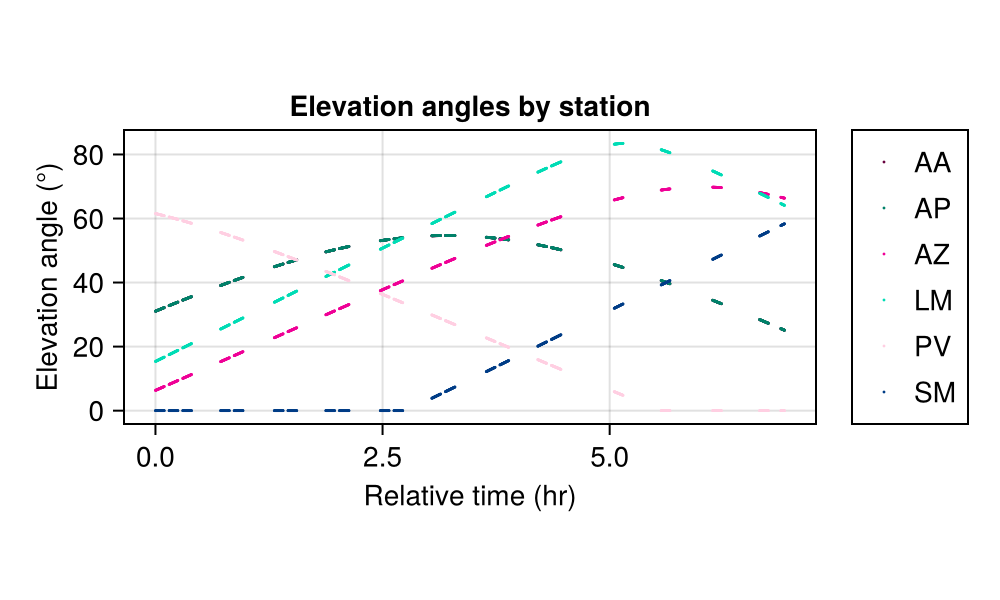
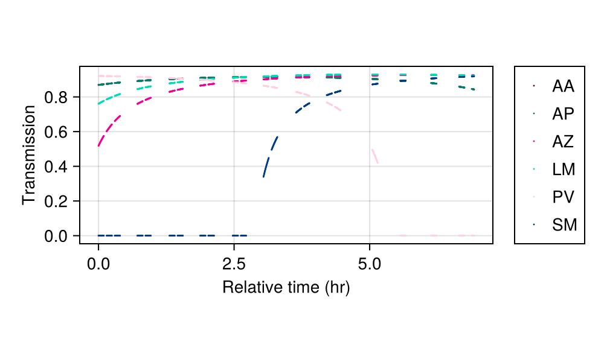
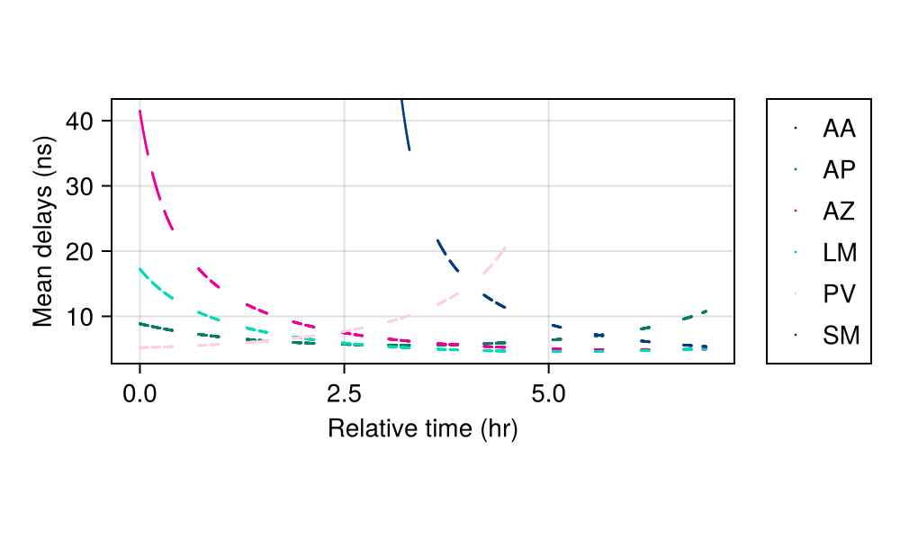
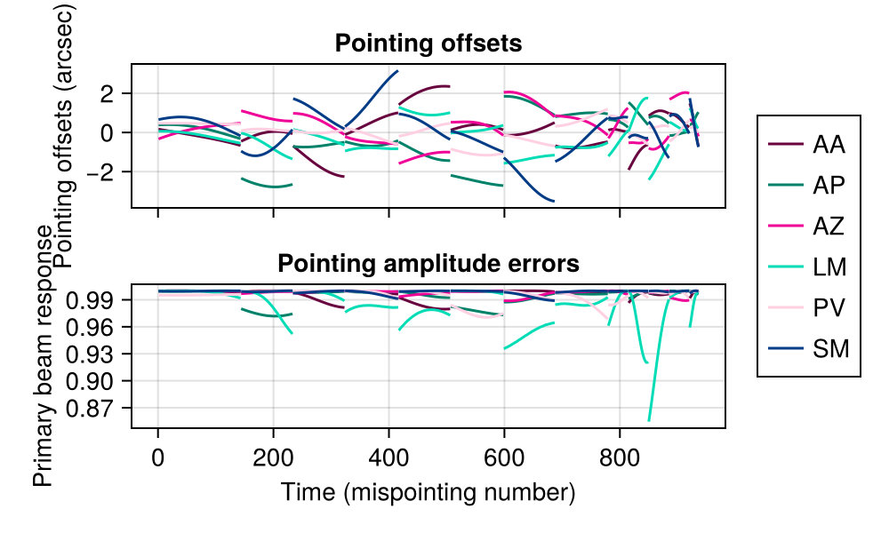
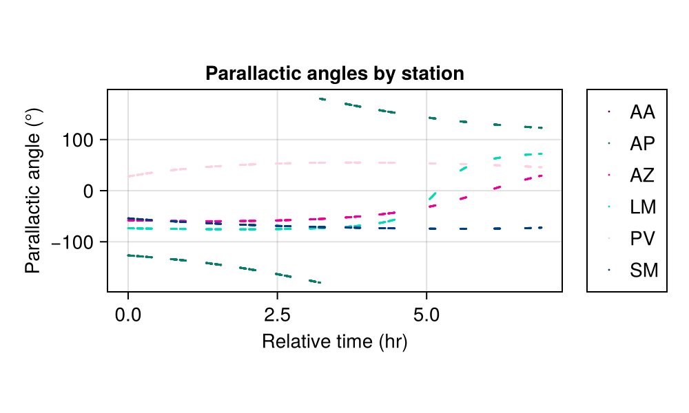
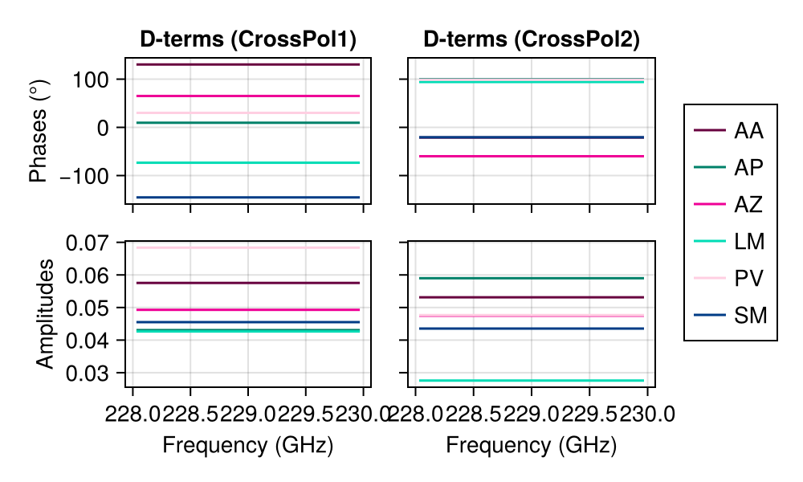
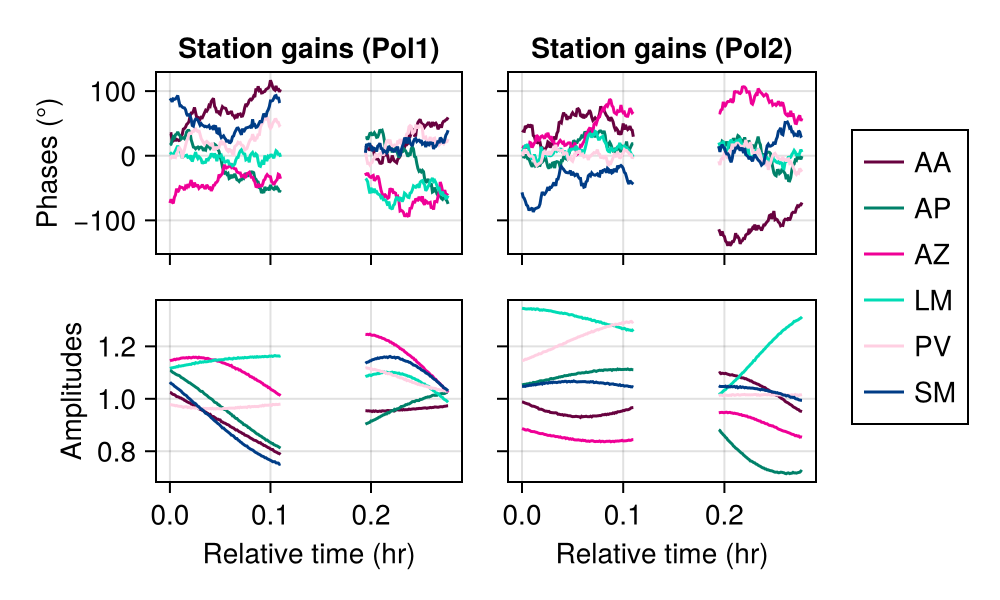
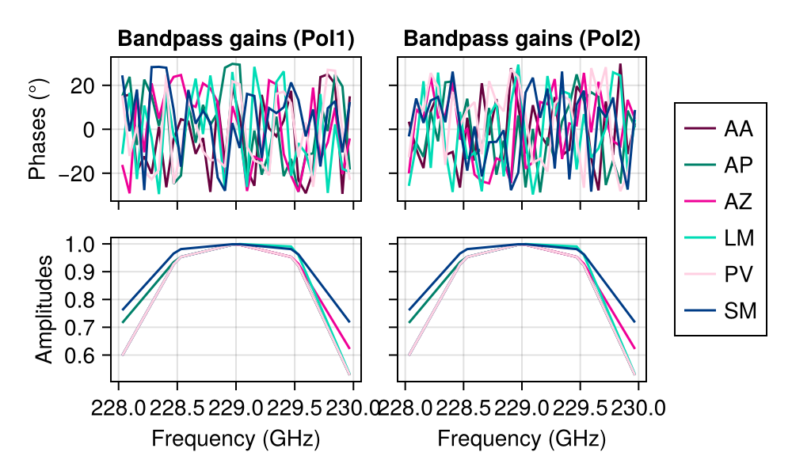

Compute instrument models
The primary goal of Anime is to generate instrument models tailored to specific observations. The models are optionally stored in HDF5 format. Basic plotting functions are also provided to visualize the models. The following example demonstrates how to compute and visualize the models.
Load necessary modules:
using Animeusing HDF5
using CairoMakieIn all the following examples, replace relativepath with the path to the source code of Anime.jl which contains sample input files under inputs/ and sample pre-created data sets and instrument models under test/.
We will use two data sets to illustrate instrument model generation – a single-channel data set and a multi-frequency data set. We first prepare config Dicts for use with the two data sets.
obsconfig = Dict()
obsconfig["msname"] = joinpath(relativepath, "test", "data", "ehtuvf.ms")
obsconfig["stations"] = joinpath(relativepath, "inputs", "eht_2017.stations")
obsconfig["corruptseed"] = 456
obsconfig["troposphere"] = Dict()
obsconfig["troposphere"]["tropseed"] = 54364
obsconfig["troposphere"]["wetonly"] = false
obsconfig["correff"] = 0.88
obsconfig["troposphere"]["attenuate"] = true
obsconfig["troposphere"]["skynoise"] = true
obsconfig["troposphere"]["meandelays"] = true
obsconfig["troposphere"]["turbulence"] = true
obsconfig["instrumentalpolarization"] = Dict()
obsconfig["instrumentalpolarization"]["visibilityframe"] = "sky"
obsconfig["instrumentalpolarization"]["mode"] = "gp"
obsconfig["pointing"] = Dict()
obsconfig["pointing"]["interval"] = 5.0
obsconfig["pointing"]["scale"] = 2.0
obsconfig["pointing"]["mode"] = "gp"
obsconfig["stationgains"] = Dict()
obsconfig["stationgains"]["mode"] = "gp"
obsconfig["bandpass"] = Dict()
obsconfig["bandpass"]["bandpassfile"] = joinpath(relativepath, "test", "data", "eht_2017.bandpass")
singlechannelms = readms(joinpath(relativepath, "test", "data", "ehtuvf.ms")) # single-channel MS
multichannelms = readms(joinpath(relativepath, "test", "data", "eht1.ms")) # multi-frequency MS
stationinfo = readstationinfo(obsconfig["stations"], delim=",", ignorerepeated=false) # read station info file
bandpassinfo = readbandpassinfo(obsconfig["bandpass"]["bandpassfile"], delim=",", ignorerepeated=false); # read bandpass info file[ Info: Load data from MS 🙆
[ Info: Load data from MS 🙆Atmospheric models
At mm-wavelengths (230 GHz), the troposphere has significant effects on signal propagation. Anime re-implements in Julia all the tropospheric effects simulated by MEQSv2[1]. The advantage here is that apart from being faster and not requiring a regular grid of complex visibilities in baseline-time space, they can be called from other imaging and calibration packages when necessary.
The function troposphere! computes various tropospheric effects based on the flags set when readms is called.
The external program AATM is requred to generate quantities related to tropospheric absorption and dispersion. Here we
pass pre-existing CSV output from AATM to absorptionfile and dispersivefile. The elevation angles of all antennas during the course of the observation can also be preloaded when casatools are unavailable to generate them from scratch.
h5file = "sample.h5"
absorptionfile = joinpath(relativepath, "test", "data", "absorption1.csv")
dispersivefile = joinpath(relativepath, "test", "data", "dispersive1.csv")
elevfile = joinpath(relativepath, "test", "data", "insmodeluvf.h5")
troposphere!(singlechannelms, stationinfo, obsconfig, h5file, absorptionfile=absorptionfile, dispersivefile=dispersivefile, elevfile=elevfile)[ Info: Computing tropospheric effects...
[ Info: Compute absorption by and dispersive delay in the troposphere using ATM 🙆
[ Info: Apply attenuation due to opacity 🙆
[ Info: Apply tropospheric noise 🙆
[ Info: Apply mean delays due to troposphere 🙆
[ Info: Introduce turbulence in the troposphere 🙆
[ Info: Compute and apply tropospheric model 🙆This computes the delays introduced by the mean and turbulent components of the troposphere, along with attenuation due to opacity and increase in system noise.
Anime provides plotting functions that help visualize these models. In the following, the gaps in the plotted curves signify lags between two observing scans.
For example, to plot the elevation angles by station we can just do
plotelevationangle(elevfile, singlechannelms.scanno, singlechannelms.times, stationinfo.station)[ Info: Plotting elevation angles by station...
[ Info: Plotted elevation angles 🙆
The transmission values computed can be plotted using
plottransmission(h5file, stationinfo.station, singlechannelms.times, singlechannelms.chanfreqvec)[ Info: Plotting station-based transmission values
[ Info: Plotted tropospheric transmission 🙆 Since this is a channel-averaged data set, the frequency-dependent transmission reduces to a single curve per station.
The delays due to the mean component of the troposphere can be plotted as follows:
plotmeandelays(h5file, stationinfo.station, singlechannelms.times, singlechannelms.chanfreqvec)[ Info: Plotting station-based transmission values
[ Info: Plotted mean delays 🙆
Primary beam response
We model the effects of antenna pointing offsets caused by various mechanical or electronic effects. The size of the primary beam affects how much the errors in antenna pointing attenuate the complex visibilities. Anime models the pointing offsets as Gaussian processes which are useful for modelling smooth variations in pointing over time.
The function pointing! is used to compute and apply pointing models to data.
pointing!(singlechannelms, stationinfo, obsconfig, h5file=h5file)[ Info: Computing pointing errors...
┌ Warning: Pointing interval (5.0) < integration time (10.0)! Setting pointing interval to 10.0 s ...
└ @ Main.Anime ~/work/Anime.jl/Anime.jl/src/beammodels/beammodels.jl:70
[ Info: Generating new mispointings every 10.0 seconds...
[ Info: Compute and apply pointing model 🙆Note that this method is a shorthand for another method with multiple arguments that provides more fine-grained control over the input parameters.
We now plot the pointing model generated:
plotpointingerrors(h5file, singlechannelms.scanno, stationinfo.station)[ Info: Plotting pointing errors...
[ Info: Plotted pointing offsets and amplitude errors 🙆 Mispointings of station LM (Large Millimeter Telescope, Mexico), the largest dish in the array, result in the largest attenuation of amplitude.
Instrumental polarization
The feed receptors are designed to be sensitive to orthogonal polarization states in either circular or linear bases. Due to imperfections in the feed (either mechanical or electronic), the orthogonal measurements "leak" into the other feed, thereby giving rise to a multiplicative Jones matrix with small non-zero off-diagonal terms. This feed error or leakage matrix is also known as the D-Jones term. In practice, this term can vary with frequency.
Anime generates smoothly varying frequency-dependent D-terms using Gaussian processes, taking a location and a scale parameter that determine the amount of leakage at each station. If the user requests to apply instrumental polarization to visibilities, they can be written out either in sky frame or antenna frame i.e., with or without parallactic angle de-rotation respectively.
inh5file = joinpath(relativepath, "test", "data", "insmodeluvf.h5")
instrumentalpolarization!(singlechannelms, stationinfo, obsconfig, h5file=h5file, elevfile=inh5file, parangfile=inh5file)[ Info: Computing polarization models...
[ Info: Applying instrumental polarization and rotating back to sky frame ...
[ Info: Compute and apply polarization models 🙆plotparallacticangle(h5file, singlechannelms.scanno, singlechannelms.times, stationinfo.station)[ Info: Plotting elevation angles by station...
[ Info: Plotted parallactic angles 🙆
plotdterms(h5file, stationinfo.station, multichannelms.chanfreqvec)[ Info: Plotting cross-hand instrumental leakage (D-terms) by station...
[ Info: Plotted D-terms 🙆 We show the D-terms for the multi-channel MS for ease of visualization.
Receiver gains
Temporal variations in complex receiver gainsfor both feeds are modelled independently. The amplitudes are modelled using a Gaussian process kernel (such as SE) while the phases are modelled using a Wiener process with a given location and scale parameters.
We use an observation with only 2 scans to illustrate this better.
stationgains!(multichannelms, stationinfo, obsconfig, h5file=h5file)[ Info: Computing station gains...
[ Info: Compute and apply station gains 🙆plotstationgains(h5file, multichannelms.scanno, multichannelms.times, multichannelms.exposure, stationinfo.station)[ Info: Plotting station gains against time...
[ Info: Plotted station gains 🙆
Also there is a complex bandpass gain variation that is modelled by using representative bandpass amplitude values at certain frequencies across the bandwidth and interpolated for the missing frequency channels.
bandpass!(multichannelms, stationinfo, bandpassinfo, obsconfig, h5file=h5file)[ Info: Computing bandpass...
[ Info: Compute and apply bandpass gains 🙆plotbandpass(h5file, stationinfo.station, multichannelms.chanfreqvec)[ Info: Plotting bandpass gains against time...
[ Info: Plotted bandpass 🙆
References
This page was generated using Literate.jl.